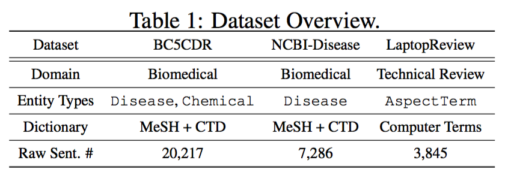
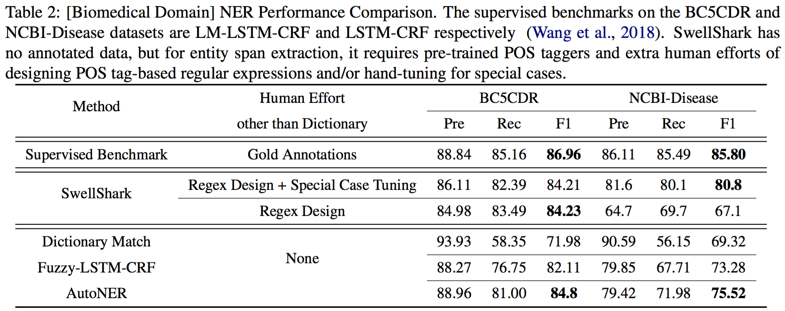
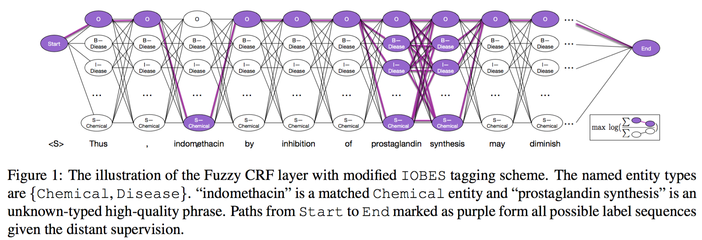
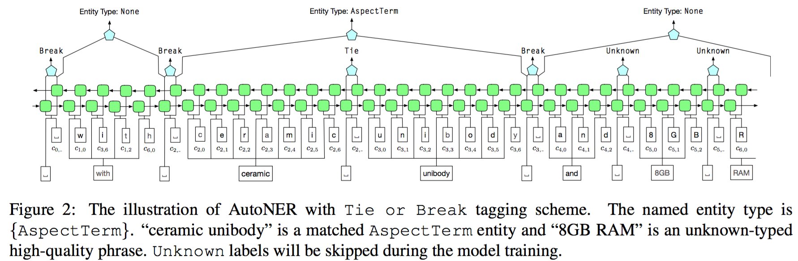

TL;DR
No line-by-line annotations, AutoNER trains named entity taggers with distant supervision.
Benchmark Results
We conduct experiments on the following three datasets in the biomedical and technical review domains.
The results listed in the following two tables demonstrate that (1) AutoNER achieves the best performance when there is no human effort other than the dictionary; (2) AutoNER achieves competitive performance as the supervised benchmark method.

Problem Setting
The input only contains a domain-specific entity dictionary and raw texts. There is no human annotations.
Specifically, we require two dictionaries as input.
- The first one contains those highly confident entity mentions with their types. Their matches in raw texts are very likely of the specified type.
- The second dictionary contains a list of high-quality phrases (i.e., no type info), which could possibly be entities of the interested types. The second dictionary can be obtained through a phrase mining on a massive corpus in the same domain.
Challenges
We obtain the distant supervision through a string match between the dictionary and the corpus. When some high-quality phrase is matched, we mark the corresponding token span as "unknown". Such token span can be an entity of the interested type, an entity of another type, a part of some entity, or a non-entity token span.
The state-of-the-art NER models mainly follow the BIO/BIOES labeling scheme, which is not compatible with the "unknown" token spans. We tried to extend the BIOES labeling scheme and propose a fuzzy CRF layer (as below) to model "unknown" token spans, but the performance is not satisfiable.

Our Solution
We propose a new labeling scheme, i.e., Tie or Break, as well as a new neural framework, i.e., AutoNER to better leverage the distant supervision.
Tie or Break. Instead of annotating each token, we choose to annotate the gap between two adjacent tokens.
- Tie: The two tokens are tied within an entity.
- Break: The two tokens are not tied within an entity.
- Unknown: At least one of the token belongs to an "unknown" token span. We are not sure about this position.
There are two important observations:
- String match-based supervision may generate partially labeled entity mentions. However, most of their inner ties are correct. Our Tie or Break labeling scheme can utilize these correct information effectively.
- Unigram entity mentions are probably the most noisy part of the string match-based supervision. However, in Tie or Break, both unigram entity span and unigram non-entity span generate two Break's around them. This makes the entity boundary detection more robust.
AutoNER. Using our Tie or Break labeling scheme, we design a new neural framework that leverages both character- and word-level information, as shown below.

Bib Tex
Please cite the following papers if you find the codes and datasets useful.
@inproceedings{shang2018learning,
title = {Learning Named Entity Tagger using Domain-Specific Dictionary},
author = {Shang, Jingbo and Liu, Liyuan and Ren, Xiang and Gu, Xiaotao and Ren, Teng and Han, Jiawei},
booktitle = {EMNLP},
year = 2018,
}
@article{shang2018automated,
title = {Automated phrase mining from massive text corpora},
author = {Shang, Jingbo and Liu, Jialu and Jiang, Meng and Ren, Xiang and Voss, Clare R and Han, Jiawei},
journal = {IEEE Transactions on Knowledge and Data Engineering},
year = {2018},
publisher = {IEEE}
}